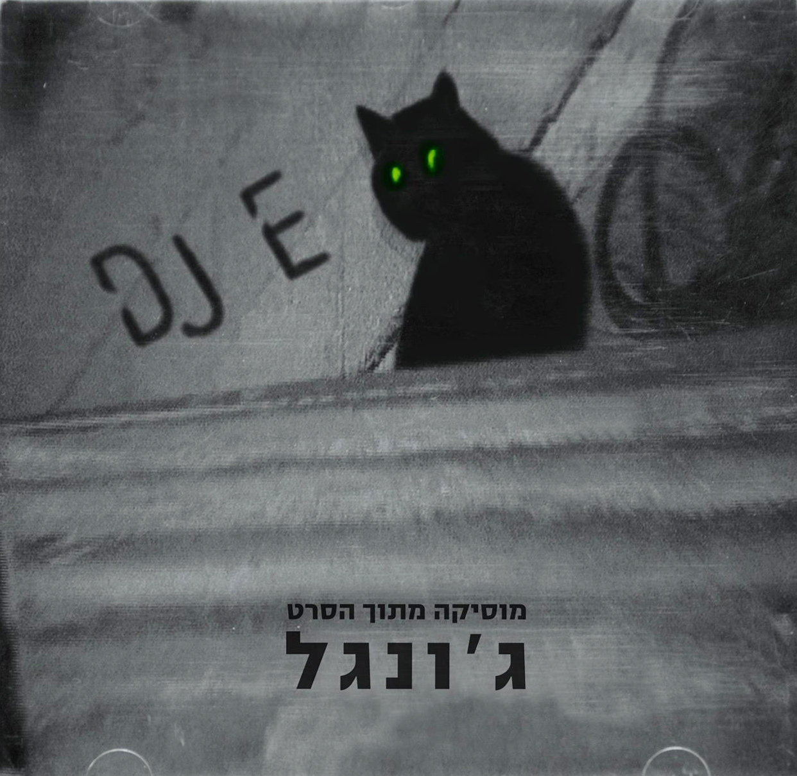

אלי שרגורודסקי (DJ E)
אדם/קבוצה

עטיפת הדיסק של אלבומו של שרגורודסקי "מוסיקה מתוך הסרט ג'ונגל", פסקול לסרטו של דני יצחקי
אלי שרגורודסקי עבד בתאטרון הפרגוד כסאונדמן. בין השאר השתתף בלהקה הניסיונית אחת 2 כזה, ובהרכב החד פעמי "אחדים", שבו היו גם נבו סבוראי וגבריאל בן-חורין מהלקת ישראל ודודיק אופנהיים מ־3ח; בהרכב שרגורודסקי ניגן בגיטרת באס. אחדים עוררו פרובוקציה לא מכוונת לאחר שבן-חורין השתמש בפוסטר שפרסם את הופעתם בצלב קרס באופן מחאתי.
מלבד זאת ארגן את הרייב הראשון בירושלים, בשנת 1992, לאחר שביקר בבריטניה ונחשף לרייבים של מוזיקה אלקטרונית, בעיקר אסיד האוס וטכנו. הוא שכר חלל קטן סמוך לרחוב אריסטובולוס ומערכת סאונד וקבע תאריך. הוא גייס את אלכס דויטש שיתקלט לצדו באותה מסיבה; מאותו אירוע הם המשיכו בסדרת מסיבות עד 1994.
באמצע שנות ה־90 עבר לתל אביב והיה רזידנט דיג'יי במועדונים "אלנבי 58" ו"דינמו דבש". כמו כן הוציא אלבום בפאקט רקורדס.